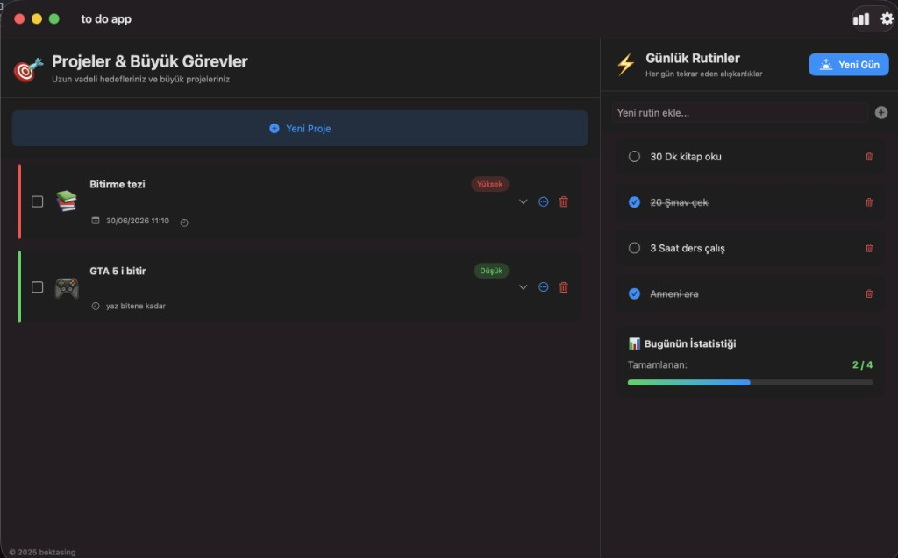

Eğitim
Teknik temellerimi üniversite eğitimimle güçlendiriyor, öğrendiklerimi gerçek projelere dönüştürüyorum.
Yeni teknolojiler öğrenmeyi, faydalı uygulamalar geliştirmeyi ve küçük bir fikrin çalışan bir ürüne dönüşme sürecini seviyorum.
Üniversite eğitimimle teknik temelimi geliştirirken boş zamanlarımda uygulamalar üretiyor, yeni araçlar deniyor ve strateji oyunları oynuyorum.
Teknik temellerimi üniversite eğitimimle güçlendiriyor, öğrendiklerimi gerçek projelere dönüştürüyorum.
Web, Android ve masaüstünde çalışan uygulamalar geliştiriyor; temiz, anlaşılır deneyimler kurmaya çalışıyorum.
Kaynak yönetimi ve uzun vadeli planlama gerektiren oyunlar, problem çözme biçimimi de besliyor.
Kapalı testteki yeni uygulamalarımın yanında, öğrenme sürecimde geliştirdiğim ve bazen yalnızca can sıkıntısından yaptığım projeleri de burada tutuyorum.
Tauri, Capacitor ve Supabase ile geliştirilmiş; anlık senkronizasyon özellikli, minimalist bir verimlilik platformu.
Çoklu dil destekli ve gelişmiş otomasyon sistemlerine sahip mobil idle / tycoon oyunu.
Klasik pişti deneyimini modern web teknolojileri ve mobil entegrasyon ile buluşturan çok oyunculu kart oyunu.
Flutter ile kendimi geliştirmek için yazdığım, farklı zaman modlarına sahip Android satranç saati.

TamamlandıSwift ve SwiftUI ile geliştirilmiş, istatistik paneline sahip native bir görev yönetim uygulaması.
Can sıkıntısından yaptığım; klasik 2048 mantığını 3, 6, 12… 3072 sayı dizisiyle yeniden yorumlayan bulmaca oyunu.
Yeni projeler, ürün geliştirme veya yalnızca merhaba demek için bana ulaşabilirsin.
E-posta bektashamza001@gmail.com